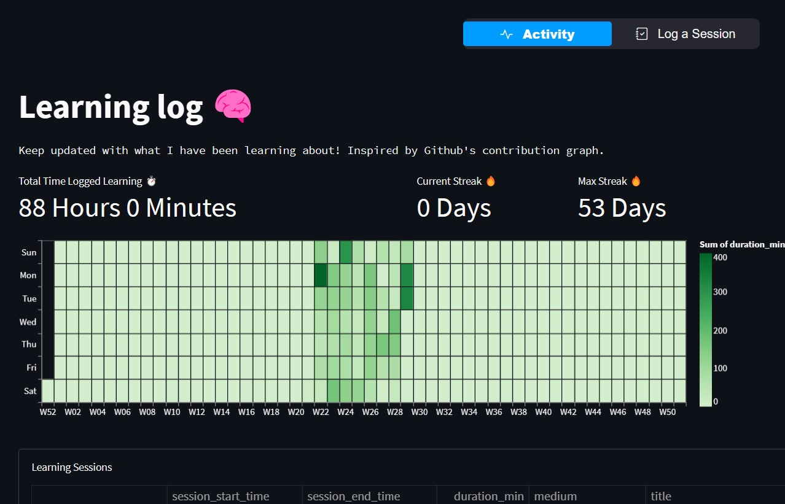
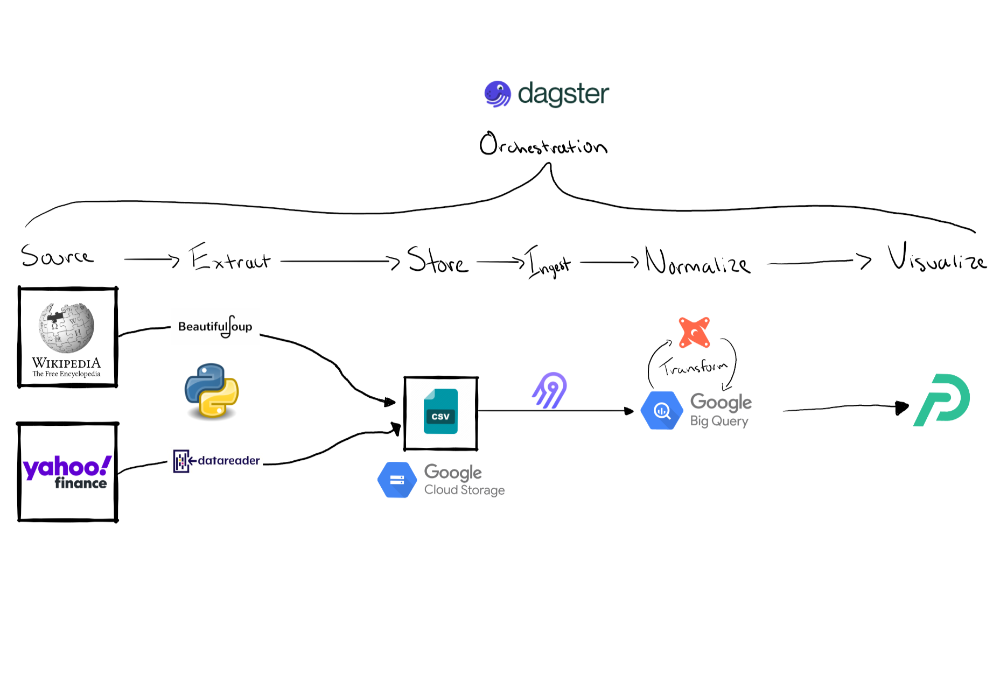

Edit this page
Report an issue
My experience on why and how I made my first open source contribution and why you should too.

Making your learning public can help you stick to your goals. Find ways to communicate to others what your learning about. That is why I built the learning log.

I wrote about my experience on setting up a data pipeline to help extract, ingest, store, transform and visualize stock market data using open source technologies such as Airbyte, Dagster, dbt & Preset.
These are my notes for CSC 155 Computer Science 1 in C++ through Oakton Community College. The course uses the book C++ Programming From Problem Analysis to Program Design.
Cool things that you can do with Quarto that I want to be able to reference back to